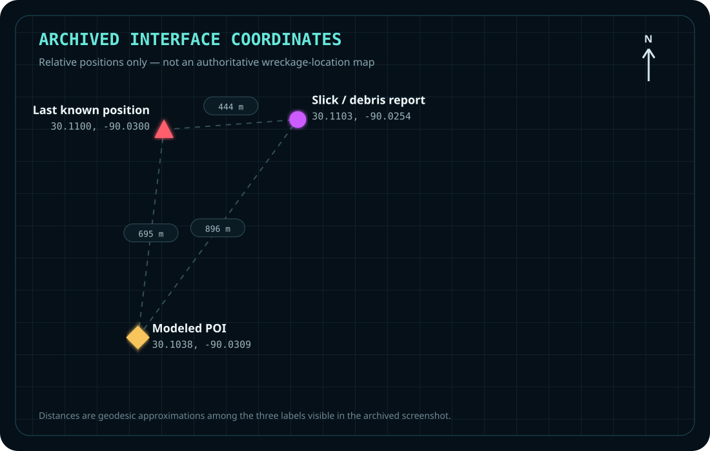

Model
Decompose the search problem into aircraft constraints, candidate sectors, last-known information, observed debris, and areas already eliminated.
N80FP / LAKE PONTCHARTRAIN / NOVEMBER 2025
I developed a recursive search workflow, translated it into mobile GPS interfaces, and shared a marker-based coordination system with boat crews during the human-led search for aircraft N80FP.
This page documents Ryan Hall's contribution to a wider, multi-team recovery operation. It does not claim that one model, one tool, or one person independently located the aircraft. Search personnel, sonar operators, divers, K-9 teams, and physical evidence remained authoritative.
01 / CONTEXT
On November 24, 2025, Cessna 172N N80FP impacted Lake Pontchartrain during an instructional flight from Gulfport to New Orleans. Public reporting based on the NTSB preliminary investigation describes a rapid descending left turn before impact; volunteer recovery teams later located the wreckage, which was recovered on December 3.
The operational problem was not simply producing another coordinate. It was turning scattered flight data, candidate areas, debris observations, and eliminated locations into a workflow that people on boats could understand and use.
02 / WORKFLOW
Decompose the search problem into aircraft constraints, candidate sectors, last-known information, observed debris, and areas already eliminated.
Check calculations independently, reject false-positive outputs, and preserve uncertainty instead of treating the model as an oracle.
Convert the analysis into mobile interfaces with live GPS, a visible search sector, and standardized field markers.
Share the tracker with other boats so crews can clear locations or consistently mark debris and possible aircraft evidence.
03 / SYSTEM
The archived source recovered for this case is the live 3D tracker. The more specialized search-interface source shown below has not yet been recovered, so that artifact is presented as a screenshot rather than executable code.
The archived screen displays a modeled point, last-known position, reported slick or debris, live GPS, a search ellipse, and standardized Clear / Debris / Crash markers.
The recovered React and Three.js project follows device position, visualizes boat heading and movement, stores timestamped markers, and exports field points as CSV.

DISPLAYED COORDINATES
The diagram plots the three coordinates visible in the archived interface. The modeled coordinate is treated as one field reference within a broader water-contact and recovery area, not as an official wreckage map or exact final resting position.
RECOVERED SOURCE
// High-accuracy live position
navigator.geolocation.watchPosition(
success,
handleError,
{
enableHighAccuracy: true,
timeout: 10000,
maximumAge: 1000
}
);
// Local projection
const dx = R * dLon * Math.cos(meanLat);
const dz = R * dLat;
// Exportable field record
id,timestamp,latitude,longitude,
scene_x,scene_z04 / DEPLOYMENT
I used the tracker in the field and distributed it to other boats so crews could apply the same marker vocabulary. That reduced the chance that one crew's “checked” location, another crew's “possible debris,” and a third crew's handwritten coordinates would become disconnected records.
“The important step was not generating a coordinate. It was turning the analysis into something another person could operate while the boat was moving.”
05 / HUMAN OVERSIGHT
The system organized location data and made the search state legible. It did not determine whether evidence was authentic, direct boats into unsafe conditions, identify human remains, or supersede incident command.
Coordinate formatting, local projection, marker logging, track history, CSV export.
Model assumptions, duplicate reports, anomalous coordinates, uncertainty, device accuracy.
Safety, navigation, evidence classification, K-9 interpretation, dive decisions, recovery operations.
06 / OUTCOME
The United Cajun Navy publicly announced that the missing Cessna 172 had been located following the wider search operation. This screenshot documents that outcome; it is not offered as independent proof that the software caused the discovery.
The recovered applications document the search-modeling and field-workflow functions described on this page. The modeled coordinate is not presented as the aircraft's exact final resting position because the model terminates at water contact and does not simulate subsequent surface movement or wreckage distribution.
Archived social-media screenshot supplied by Ryan Hall.
A dated handwritten letter and forensic K-9 investigation challenge coin were presented after the search in recognition of Ryan's contribution. This is not represented as an FBI award or institutional endorsement.
07 / RECOGNITION
The original letter and coin are retained privately. The archival photograph is included because it establishes that the contribution was recognized by a participant connected to the K-9 search effort—not because recognition replaces technical proof.
The evidentiary hierarchy remains clear: source code proves the tool; screenshots show its interface; field photographs show deployment; public records establish the broader incident and recovery; the letter documents personal recognition.
08 / EVIDENCE REGISTER
React/TypeScript/Three.js tracker source, geolocation hook, marker state, track rendering, and CSV export.
Two interface screenshots, one field-operation photograph, recovery-update screenshot, and recognition photograph.
Ryan states that the tracker was distributed to other boats for consistent marking and clearing of searched locations.
NTSB-derived reporting documents the accident sequence, wreckage location relative to the final ADS-B point, and recovery.
The executable source for the specialized Clear / Debris / Crash interface has not yet been recovered.
The reference model terminates at water contact and does not simulate the subsequent surface skid, debris movement, or final wreckage distribution.
WHY THIS MATTERS
This project demonstrates the operator pattern: enter an unfamiliar and ambiguous process, identify the high-leverage information problem, build an assistive system, preserve human control, put the system in other people's hands, and leave behind reusable evidence rather than a one-time demonstration.